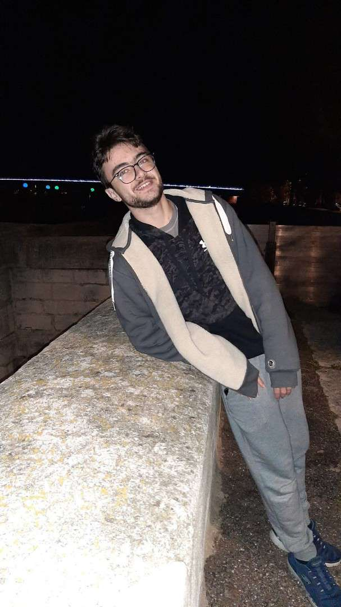
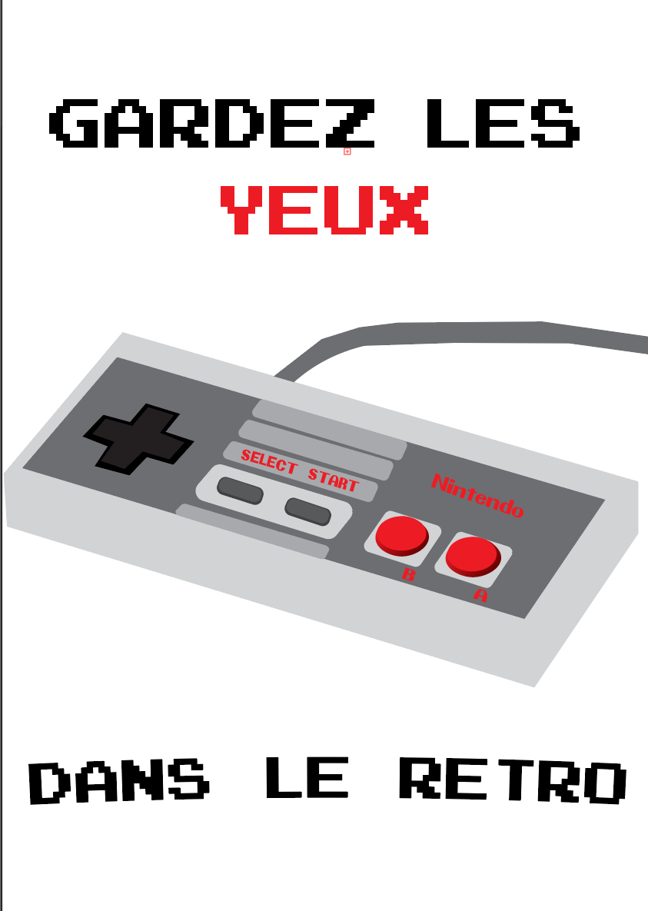
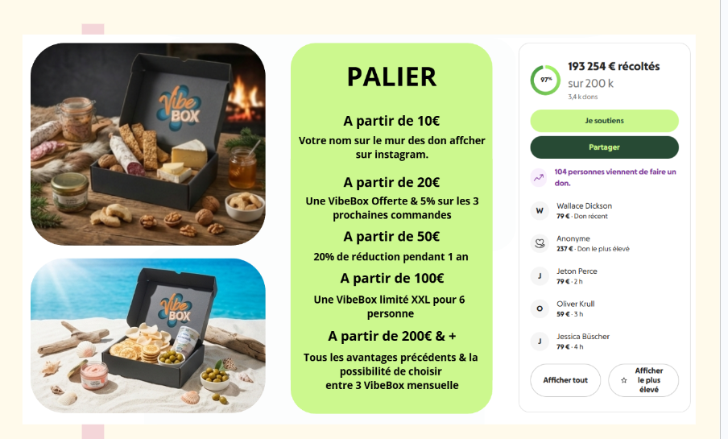
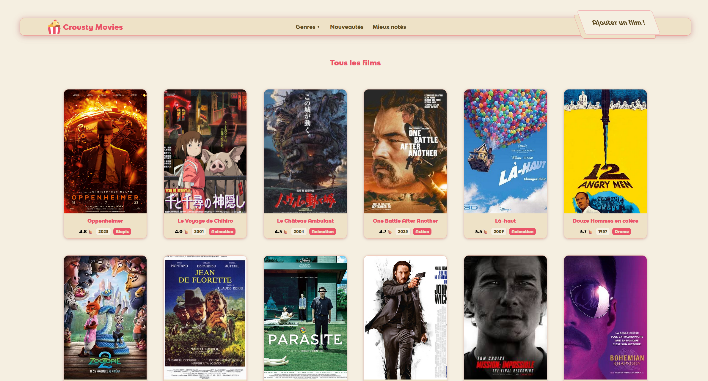
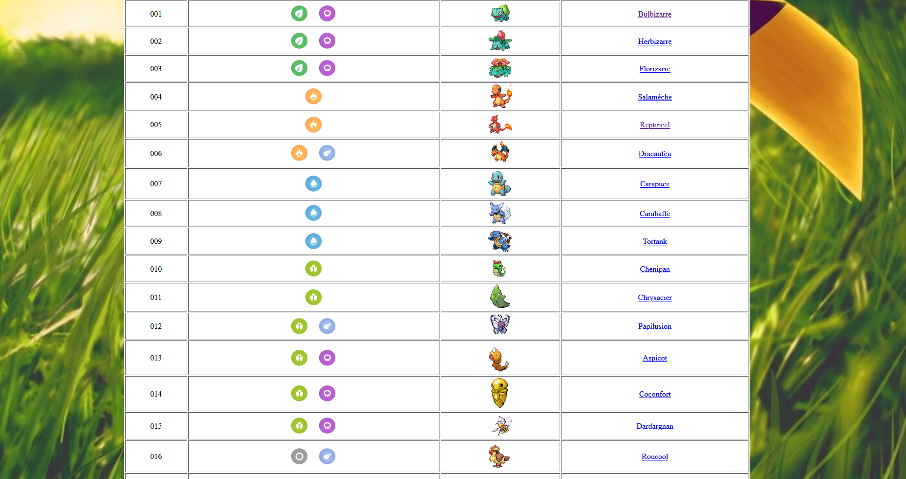

À propos de moi
Je m’intéresse depuis plusieurs années à la création numérique sous toutes ses formes. Ce qui m’attire avant tout, c’est la possibilité de transformer une idée en quelque chose de concret, visuel et interactif.
J’ai commencé par m’intéresser à la communication dans son vaste ensemble pour prendre en compte une préférence pour l’entretien d’une image publique.
Ma formation m’a permis d’apprendre à faire des affiches et à organiser des documents de manière lisible et design.

Projets de Communication
Créations graphiques et visuelles pour la communication.
Affiche pour la PXL LAN
Création d’une affiche événementielle avec une esthétique rétro et un message visuel fort. Conception graphique pour promouvoir un événement gaming. Compétences : Photoshop, Illustrator, design graphique.

Projet de box fictif
Conception de packaging et d’une identité de produit pour une box marketing. Développement d'une identité visuelle complète pour un produit fictif. Compétences : Branding, packaging design.

Montages Vidéo
Réalisations en montage et édition vidéo.
Montage bande annonce
Réalisation d'une bande annonce dynamique avec effets visuels et montage rythmé. Création de contenu promotionnel engageant. Compétences : Adobe Premiere, After Effects, montage vidéo.
CV vidéo
Présentation vidéo personnelle pour mettre en valeur les compétences et expériences. Format innovant pour un CV traditionnel. Compétences : Montage vidéo, storytelling, Adobe Premiere.
Montage jeu vidéo
Édition de séquences de jeu avec effets spéciaux et transitions fluides. Mise en valeur de gameplay captivant. Compétences : Montage vidéo, effets visuels, Adobe Premiere.
Développement Web
Projets de développement et programmation.

Site Crousty Movies
Projet de développement web en groupe. Développement d'un site web pour une plateforme de films avec interface utilisateur intuitive. Compétences : PHP, HTML, CSS.
Pokedia - Pokédex Interactif
Création d'un Pokédex web interactif permettant de consulter les informations des Pokémon. Développement d'une interface moderne avec recherche, filtres et animations. Compétences : HTML, CSS, JavaScript, API Integration.

Projets de Groupes
Encyclopédie de tous les projets réalisés en groupe.
Site Crousty Movies
Projet de développement web en groupe. Développement d'un site web pour une plateforme de films avec interface utilisateur intuitive. Compétences : PHP, HTML, CSS.
Info sur Dark Patterns
Vidéo informative réalisée en collaboration sur les dark patterns en UX/UI. Éducation sur les pratiques manipulatrices en design. Compétences : Recherche, montage vidéo, communication visuelle.
Projet de box fictif
Conception de packaging et d’une identité de produit pour une box marketing. Développement d'une identité visuelle complète pour un produit fictif. Compétences : Branding, packaging design.
Contactez-moi
Pour toute opportunité professionnelle, utilisez ces informations.